Que proposons-nous?
Les ateliers hebdomadaires
Enfants à partir de 8 ans, adolescents, adultes : Communiquer ses sensations, ses émotions… Faire rire et pleurer. Vibrer avec les autres. S’amuser en inventant des personnages. Développer la confiance en soi, ses possibilités d’imagination et d’expression. Jouer, sur une scène, un spectacle créé dans un esprit d’équipe à partir de thématiques choisies en groupe… Tels sont les objectifs des ateliers théâtre menés aux Ateliers Bouldegum tout au long de l’année. En mai, nos ateliers aboutissent à la création de spectacles originaux, présentés lors de notre festival des Ateliers Bouldegum au Centre Culturel ou à la salle d’Ophain (Braine l'Alleud). Enfants de 5 à 8 ans : Approche ludique de l’expression corporelle et verbale, mime, jeux sur le rythme et la musique, développer la confiance en soi, son imaginaire ... Les ateliers sont dirigés par des animateurs et animatrices spécialisés : comédiens, scénographes, dramaturges..., et pédagogues expérimentés dans l'animation théâtrale et y apportant leur sens de l'écoute, leur enthousiasme et leur savoir-faire professionnel.
Les stages
enfants de 4 à 12 ans, adolescents, adultes (+ de 18 ans)
Un stage aux Ateliers Bouldegum, c’est…
… Un moment privilégié pour éveiller les enfants à une ou plusieurs pratiques artistiques, dans un esprit ludique et dans un cadre familial Encadrés par des animateurs tout à la fois artistes professionnels et animateurs chevronnés, nos stages ont pour objectif prioritaire de développer la confiance en soi des enfants, en les amenant à découvrir et à explorer leurs capacités d’imagination et d’expression. Et partant du principe que chaque enfant a son propre rythme de développement et son chemin de vie (déjà !) personnel, nos groupes sont volontairement limités à 12 participants maximum, de manière à ce que nos animateurs puissent consacrer une attention spécifique à chacun, tout en développant une dynamique de groupe basée sur la coopération, l’esprit d’équipe et le respect de l’autre. Ou comment être soi dans la diversité du groupe… Mais parce qu’un chemin créatif est aussi fait de réalisations concrètes et de partages, une semaine passée aux Ateliers Bouldegum se termine toujours par un moment ouvert où les enfants partagent le fruit de leur cheminement avec leurs proches.
Commedia dell’arte
Découvrir le jeu théâtral masqué italien, avec ses personnages typés . Apprendre à improviser dans la peau de ces personnages masqués ou non masqués. Fabriquer son masque et jouer avec lui.
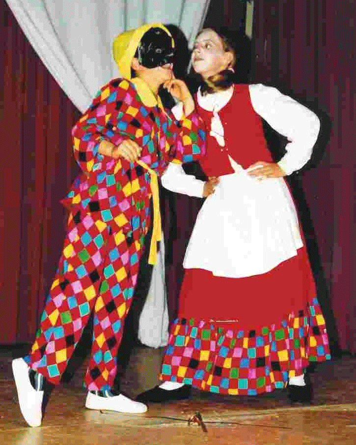 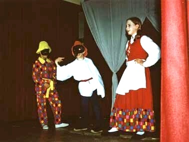Improvisation théâtrale jeunes/adultes
Pas de match, ni de compèt’. Chez nous, l’impro c’est une des manières de créer un spectacle. S’entraîner à intégrer des consignes de jeu et à construire des personnages qui se rencontrent dans une histoire à jouer ensemble.
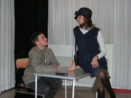 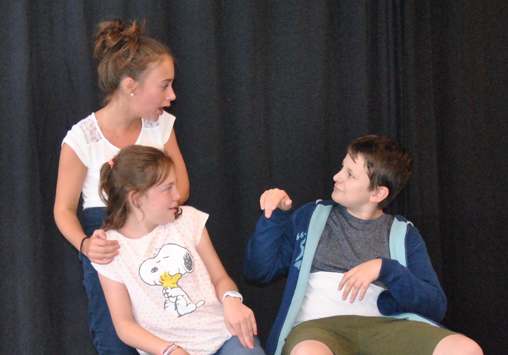Expression théâtrale et marionnettes; théâtre d'objets
Expression théâtrale et création de marionnettes qui s’animeront dans un spectacle imaginé par les enfants.
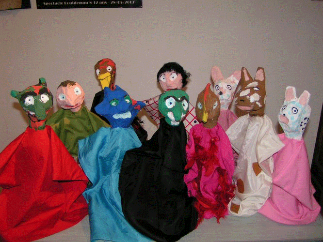Initiation à l'expression théâtrale
Approche ludique de l’expression corporelle et du mime, jeux sur le rythme, la musique, des chansons. S'amuser en inventant et interprétant des personnages. Découvrir et développer ses possibilités d'imagination et d'expression.
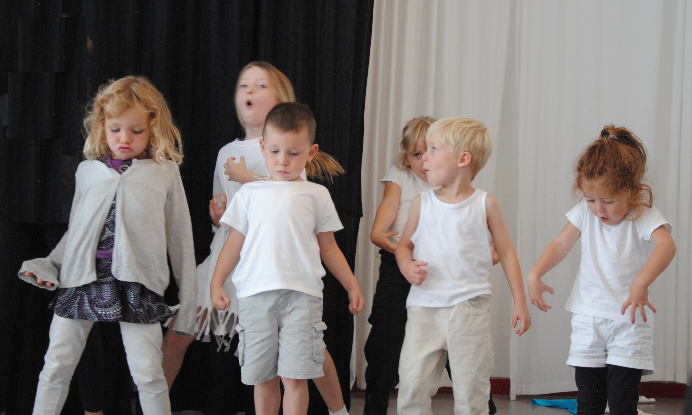 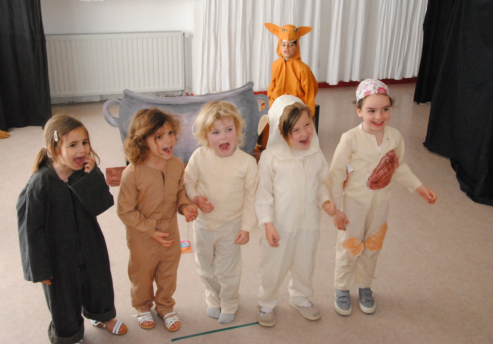Théâtre et contes
Découvrir des contes des quatre coins du monde.Créer un spectacle, en adaptant un conte existant, en créant une histoire dans l’esprit des contes.

Théatre et chant
Partir à la découverte de notre voix par l'éxpression théatrale et l'improvisation,.
br> Mettre en scène des chansons qui nous tiennent à coeur. 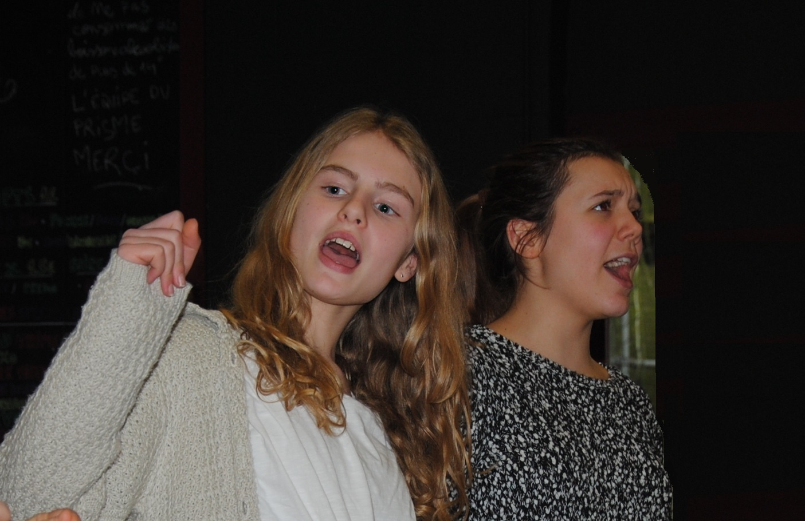A la découverte du clown de théatre
Partons à la découverte du clown qui sommeille en nous et découvrons les particularités de l'improvisation clown.
Le plaisir de l'imaginaire sans limite,l'émotion partagée.

Stages pour adultes (découverte et approfondissement) .... et stages pour enfants

Modules ou week-ends de formation(jeunes et adultes):
A Braine l'Alleud ou ailleurs sur demande , ces formations proposent d'aborder l'intiation au jeu comédien, l'improvisation, la commedia dell'arte , le jeu clownesque, la voix et le chant,...Spectacles du theatre bouldegum
CLOWN CONTEUSE
Tous ces spectacles peuvent être suivis d'animations selon la demande.
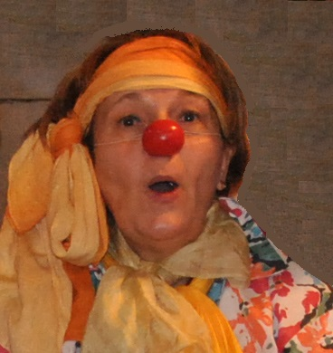Pour plus de détails sur les spectacles proposés cliquez sur
Albertine Bouldegum conte des légendes de chez nous"
Pour tout public à partir de 5 ans. Durée du spectacle : 45 min.Albertine Bouldegum conte "la clé d'or
Pour tout public à partir de 4 ans. Durée du spectacle : 30 min.Albertine Bouldegum conte "La princesse à la voix d'or"
Pour tout public à partir de 4 ans. Durée du spectacle : 30 min.CONTEUSE
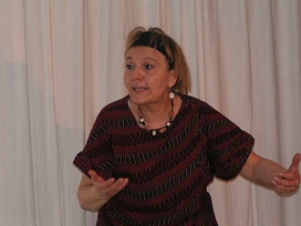Mamy Watta, reine de l'eau,d'après un conte africain
Pour enfants dés 4ans : Durée du spectacle : 40min.SPECTACLES DE MARIONNETTES
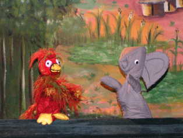Trompette,l'éléphant curieux
Pour les enfant à partir de 3 ans. Durée du spectacle : 30min.L'hyène et l'arbre qui parle"
Pour les enfants à partir de 5 ans. Durée du spectacle : 30 min.
Projets théâtraux en milieu scolaire
Une aide est proposée aux enseignants qui souhaitent organiser des projets théâtraux au sein de leur classe. Cette aide peut être donnée au démarrage d'un projet ou de manière ponctuelle, en fonction de la demande.
Après-midi récréatives en famille
Plusieurs fois par an dans nos locaux de la rue du Ménil - notamment pour la visite de Saint-Nicolas - notre équipe propose des après-midis récréatives où l'on peut venir en famille, assister à un spectacle en toute convivialité.Anniversaires et fêtes d'enfants
Nous organisons également des animations, des grimages d'enfants, des spectacles chez vous. Pour plus d'informations à ce sujet contactez-nous au 0485/85 03 34
s 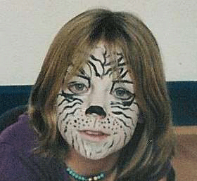